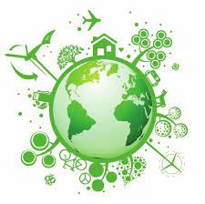

Día de la Tierra.
¿QUE ES?
Es un día celebrado en muchos países el 22 de abril. Su promotor, el senador estadounidense Gaylord Nelson, instauró este día para crear una conciencia común a los problemas de la sobrepoblación, la producción de contaminación, la conservación de la biodiversidad y otras preocupaciones ambientales para proteger la Tierra.
Es un día para rendir homenaje a nuestro planeta y reconocer a la Tierra como nuestro hogar y nuestra madre, así como lo han expresado distintas culturas a lo largo de la historia, demostrando la interdependencia entre sus muchos ecosistemas y los seres vivos que la habitamos.
¿Cómo celebrar el Día de la Madre Tierra?
Podemos celebrar el día de una forma práctica, realizando acciones como:

1.- Usar y recomendar a las personas cercanas o alrededor que cambien de las lámparas incandescentes a las lámparas de bajo consumo.
2.- Aconsejar a todos que por un día desconecten aparatos electrónicos y consuman menos electricidad.
3.- Enseñar a los niños a apreciar y a cuidar a la naturaleza. Y sobre la importancia de la biodiversidad.
